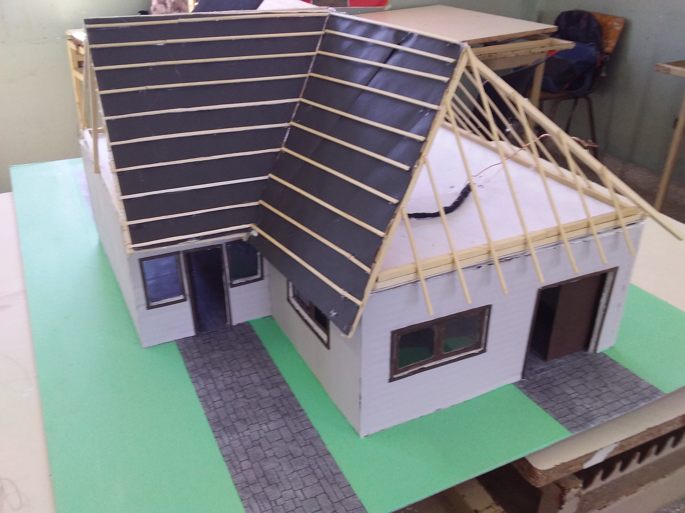
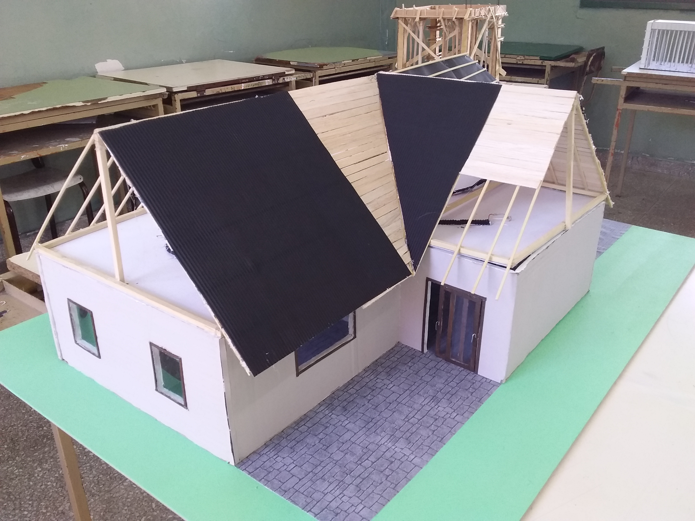
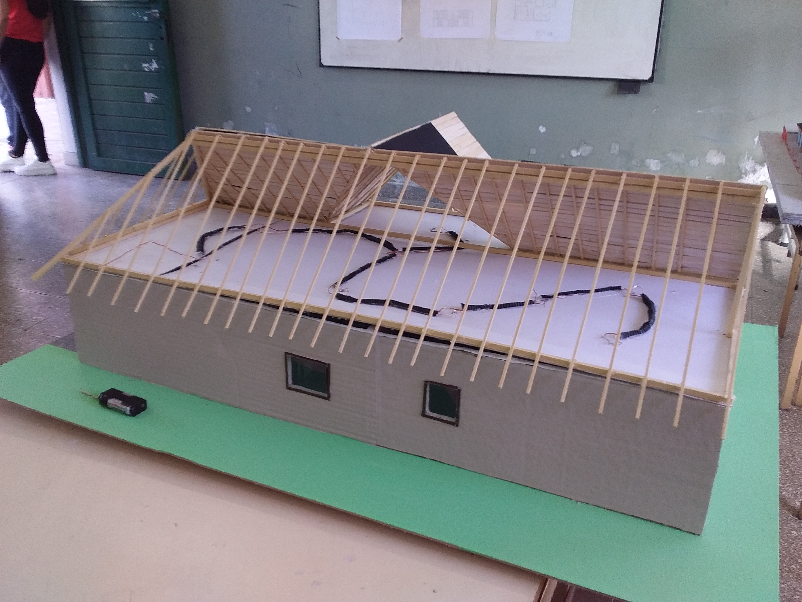
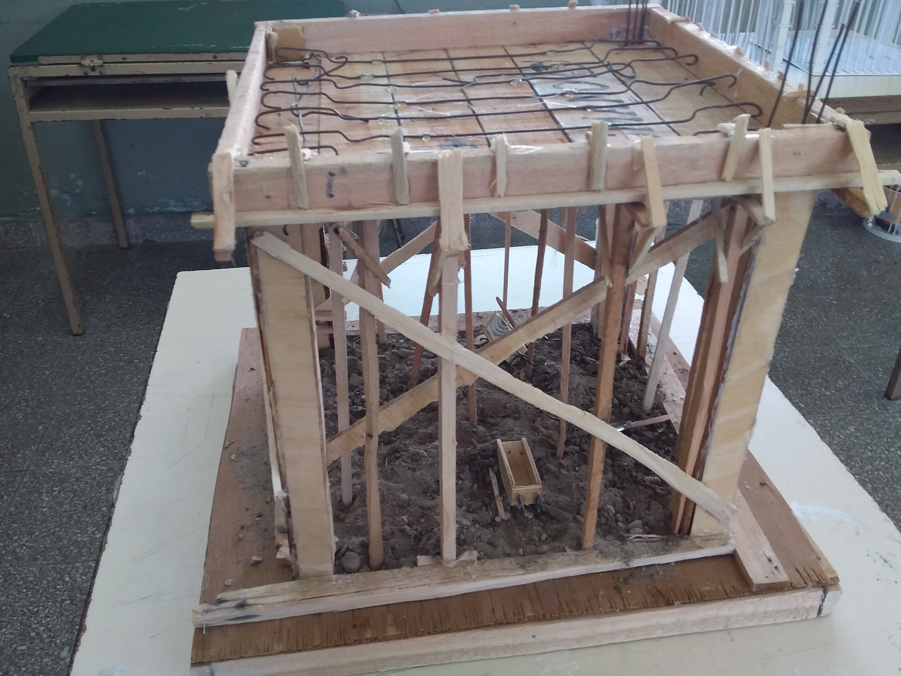

La especialidad Maestro Mayor de Obras forma técnicos capaces de interpretar, representar, proyectar, calcular, documentar y conducir obras de arquitectura. Su recorrido articula dibujo técnico, sistemas constructivos, estructuras, instalaciones, gestión de obra y prácticas profesionalizantes vinculadas al ejercicio real del oficio.
El egresado puede colaborar en estudios técnicos, oficinas de proyecto, empresas constructoras y áreas públicas vinculadas a obras. Está preparado para producir documentación gráfica y técnica, asistir en cálculos estructurales y presupuestos, controlar y supervisar tareas de obra, y participar de manera integral en los procesos de planificación, ejecución y mantenimiento edilicio, aportando criterios técnicos y de gestión. También puede intervenir en la coordinación de gremios, el control de calidad de materiales y el cumplimiento de normativas de seguridad e higiene en cada etapa de la obra.
Modalidad: Presencial
Duración: 7 años
Título: Maestro Mayor de Obras



